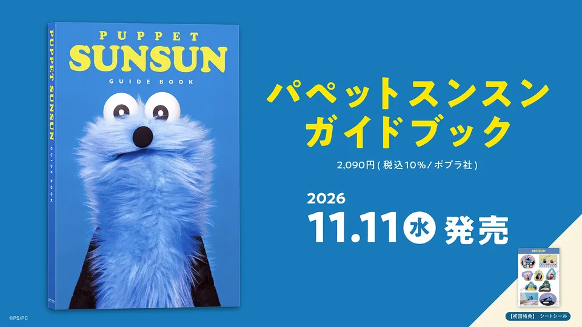
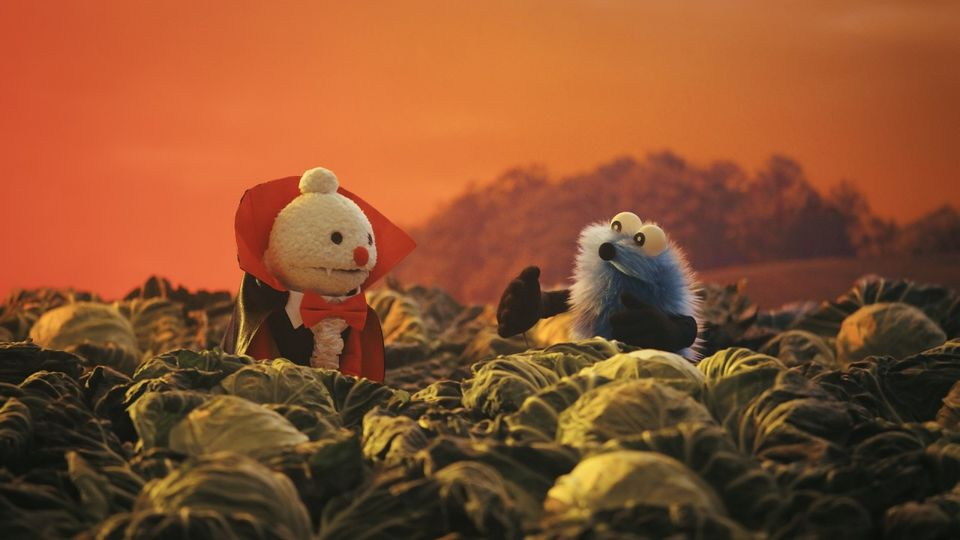
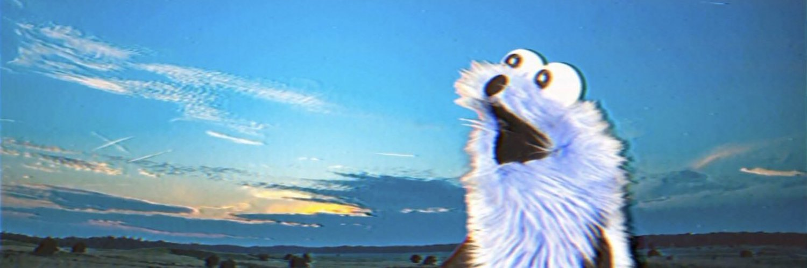

2026.9.16
『PUPPET SUNSUN GUIDE BOOK』即將發售!
讓我們跟隨 SUNSUN 的腳步
一同前往神秘的布偶之國…
パペットスンスン - とてと (Official Music Video)
「PUPPET SUNSUN」是由日本創作者於2019所開始在社群平台上發布創作的手偶角色。
現已在全世界累積大量人氣，成為家喻戶曉的人氣IP！
晨間節目(中配) 最新收看資訊每週三9:28更新!

10/28 Episode66「Mushroom/Halloween」【日本語/English/中文/한국어】